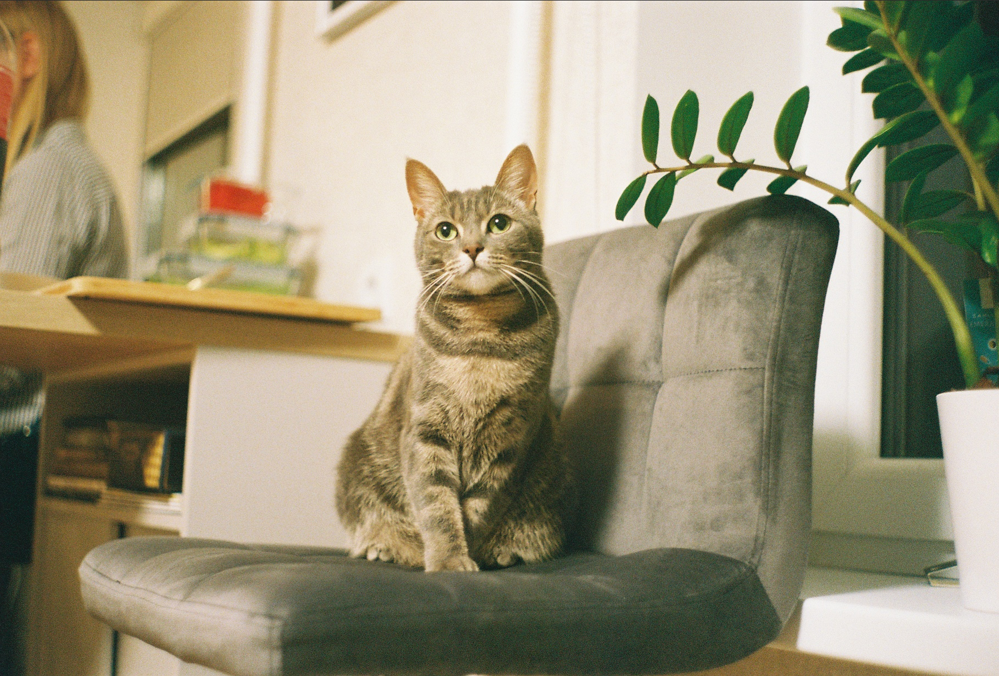
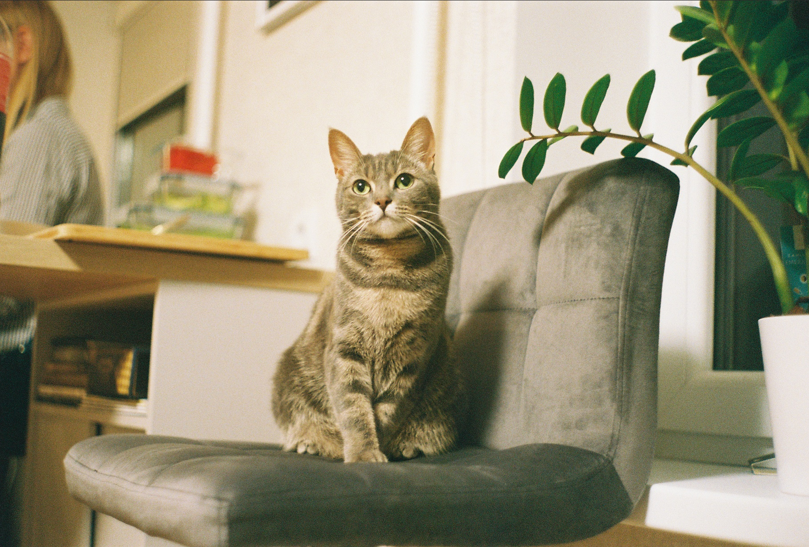

Taustateave
See projekt on loodud TÜ informaatika õppetöö raames.
Esimene mõte oli teha järgmine küpsiste vajutamise mäng, aga kõik on seda juba näinud, nii et valisime kodusema teema – ainepunktid ehk EAP-d –, kuna kes ei tahaks näha, kuidas ühe nupuvajutusega saab kogu semestri EAP-d kätte. Samuti saab lihtsalt rahustuseks ilusat sinist nuppu vajutada.
Lähtusime ka poolsarkastilisest lausest "Ülikoolis käiakse ju punkte kogumas, mitte õppimas."
Projekt on valminud Laur Mait Lehepuu, Juhan Simmi ja Mattias Volti poolt tiiminime Mölin alt. Peamised eesmärgid olid oskuste lihvimine ja tiimitöö kogemuse saamine.
Veebileht on loodud puhtalt meie imeliste ajude, HTMLi, CSSi ja JavaScripti abil. Ja ütleme nii, et me nähtavalt oleme väga inspireeritud ut.ee veebilehe kujundusest.
Loodame, et sellest mängust saavad ka rõõmu ja rahuldust ka teised.
Autasuks on siin paar kassipilti
 
